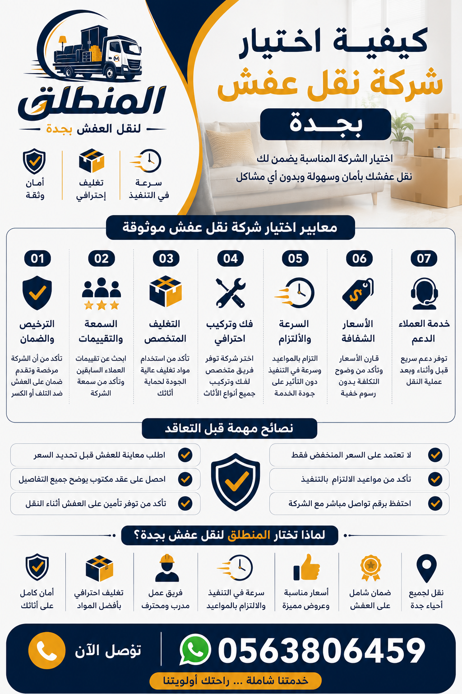

هل تبحث عن كيفية اختيار شركة نقل عفش موثوقة تحمي أثاثك وتوفر لك راحة البال؟ اختيار شركة نقل عفش المناسبة ليس مجرد قرار عابر، بل هو استثمار في سلامة ممتلكاتك. في هذا الدليل الشامل، ستتعرف على معايير اختيار شركة نقل عفش وأهم النصائح التي تضمن لك تجربة نقل سلسة وخالية من المشاكل. سواء كنت تبحث عن أفضل شركة نقل عفش في جدة أو ترغب في معرفة كيف تختار شركة نقل عفش مضمونة، فإن هذا المقال سيقدم لك كل ما تحتاجه. شركة نقل عفش بجدة المنطلق هي نموذج مثالي للشركات التي تجمع بين الخبرة والجودة والأسعار التنافسية. تابع القراءة لتتعرف على نصائح اختيار شركة نقل عفش التي ستغير نظرتك لعملية النقل.
اختيار شركة نقل عفش هو قرار يؤثر بشكل مباشر على سلامة أثاثك وراحتك النفسية. عملية نقل الأثاث ليست مجرد تحميل وتفريغ، بل هي عملية معقدة تشمل فك وتركيب الأثاث، تغليف العفش، والتعامل مع قطع كبيرة وثقيلة. عندما تختار شركة نقل عفش موثوقة، فإنك تضمن أن أثاثك سيصل إلى وجهته الجديدة بنفس حالته دون خدوش أو كسر. على العكس، كيف تختار شركة نقل عفش غير مؤهلة؟ قد تدفع ثمن الإهمال غاليًا. لذلك، كيفية اختيار شركة نقل عفش الجيدة هي مهارة يجب أن يتقنها كل من يخطط للانتقال. شركة نقل عفش بجدة المنطلق تدرك أهمية هذه الخطوة، وتضع نفسها في مقدمة الشركات التي تستحق ثقتك. من خلال هذا الدليل، سنساعدك على فهم معايير اختيار شركة نقل عفش وكيفية التمييز بين الشركات الاحترافية والشركات الوهمية. تذكر أن اختيار شركة نقل أثاث احترافية يوفر عليك الوقت والجهد والمال على المدى الطويل. من نحن نؤمن بأن العميل الواعي هو الذي يحصل على أفضل خدمة. لذا، دعنا نستعرض معًا أهم النقاط التي تجعل اختيار شركة نقل عفش عملية مدروسة وناجحة.

عندما تبحث عن كيفية اختيار شركة نقل عفش، يجب أن تضع مجموعة من المعايير الأساسية نصب عينيك. أول هذه المعايير هو الترخيص الرسمي، فالشركة المرخصة تخضع للقوانين واللوائح التي تحمي حقوقك. المعيار الثاني هو الخبرة، فالشركة التي تعمل في مجال نقل الأثاث لسنوات طويلة تكون قد واجهت مختلف التحديات وتعلمت كيفية التعامل معها. المعيار الثالث هو سمعة الشركة بين العملاء، والتي تعكس جودة خدمات نقل العفش التي تقدمها. المعيار الرابع هو تعدد الخدمات، مثل تغليف العفش وفك وتركيب الأثاث وونش رفع العفش، وهذا يدل على احترافية الشركة. المعيار الخامس هو الشفافية في التسعير، حيث تقدم الشركة عروض أسعار واضحة بدون رسوم خفية. شركة نقل عفش بجدة المنطلق تجمع كل هذه المعايير، مما يجعلها أفضل شركة نقل عفش للكثيرين. نصائح اختيار شركة نقل عفش تؤكد دائمًا على ضرورة التحقق من هذه المعايير قبل التعاقد. خدماتنا تشمل جميع ما تحتاجه من نقل وتغليف وفك وتركيب. اتصل بنا لمعرفة المزيد عن معايير الجودة التي نلتزم بها. لا تنس أن اختيار شركة نقل أثاث احترافية هو ما يضمن لك نقلًا سلسًا وآمنًا.
كيف تختار شركة نقل عفش ذات خبرة؟ الخبرة ليست مجرد عدد سنوات في السوق، بل هي القدرة على التعامل مع مختلف أنواع الأثاث والظروف. الشركة ذات الخبرة تمتلك عمالة مدربة على فك وتركيب الأثاث بكافة أنواعه، من غرف النوم إلى المجالس العربية والمطابخ. كما أن لديها سيارات نقل عفش مجهزة بأحدث المعدات لتأمين الأثاث أثناء النقل. للتأكد من خبرة الشركة، يمكنك سؤالها عن عدد العمليات التي نفذتها خلال العام الماضي، وطلب مشاهدة صور لأعمال سابقة، والاستفسار عن فني فك وتركيب محترفين يعملون لديها. شركة نقل عفش بجدة المنطلق تمتلك أكثر من 10 سنوات من الخبرة في مجال نقل الأثاث، وفريق عمل مدرب على أعلى مستوى. من نحن نفتخر بتاريخنا الحافل بالنجاحات. معايير اختيار شركة نقل عفش تشمل بالضرورة التحقق من خبرة الشركة من خلال تقييمات العملاء وعدد العمليات المنفذة. نقل عفش بجدة مع شركة المنطلق يعني أنك تتعامل مع خبراء يعرفون كل تفاصيل المهنة. لا تتردد في طلب توثيق الخبرة، فالشركة الموثوقة لن تتردد في تقديم ذلك.
تقييمات العملاء هي مرآة تعكس جودة خدمات نقل العفش التي تقدمها الشركة. عند البحث عن كيفية اختيار شركة نقل عفش، يجب أن تكون تقييمات العملاء السابقين من أهم المصادر التي تعتمد عليها. اقرأ التقييمات على منصات التواصل الاجتماعي، جوجل، والمواقع المتخصصة. انتبه إلى التفاصيل: هل يتحدث العملاء عن الالتزام بالمواعيد؟ هل يشيدون بجودة تغليف العفش؟ هل يذكرون خدمة العملاء وحسن التعامل؟ التقييمات الإيجابية المتكررة تعني أن الشركة تقدم جودة الخدمة باستمرار. لكن انتبه أيضًا إلى كيفية تعامل الشركة مع التقييمات السلبية، فالشركة الاحترافية ترد على الشكاوى وتحاول حلها. شركة نقل عفش بجدة المنطلق تفخر بتقييماتها الإيجابية التي تعكس ثقة العملاء. يمكنك قراءة المزيد عن تجارب عملائنا من خلال مدونتنا التي تتضمن قصص نجاح حقيقية. نصائح اختيار شركة نقل عفش تؤكد دائمًا أن تقييمات العملاء هي مؤشر قوي على موثوقية الشركة. لذا، خصص وقتًا لقراءة التقييمات قبل اتخاذ قرارك النهائي. تواصل معنا واسأل عن تجارب عملائنا السابقين.
المعاينة المجانية هي خطوة لا غنى عنها في كيفية اختيار شركة نقل عفش. من خلال المعاينة، يقوم مندوب الشركة بزيارة منزلك لتقييم كمية الأثاث، وعدد الغرف، ووجود مصعد، والمسافة، وأي تحديات أخرى قد تواجه عملية النقل. هذا التقييم الدقيق يسمح للشركة بتقديم عرض سعر دقيق يلبي احتياجاتك دون مفاجآت. كما أن المعاينة تمنحك فرصة للتعرف على مندوب الشركة وطرح أسئلتك مباشرة. الشركات التي ترفض تقديم معاينة مجانية غالبًا ما تكون غير موثوقة، لأنها تريد تجنب الالتزام بسعر محدد. شركة نقل عفش بجدة المنطلق تقدم معاينة مجانية تمامًا دون أي التزام من جانبك. اتصل بنا لتحديد موعد المعاينة. اختيار شركة نقل عفش موثوقة يبدأ بهذه الخطوة البسيطة ولكنها حاسمة. المعاينة المجانية تمنحك راحة البال وتضمن أن السعر الذي ستدفعه هو السعر العادل مقابل الخدمة التي ستحصل عليها. خدماتنا تشمل معاينة دقيقة من فريق متخصص. لا تتعامل مع شركة لا تقدم هذه الخدمة الأساسية.
كيف تقارن بين شركات نقل العفش هو سؤال مهم يطرحه الكثيرون. عند مقارنة العروض، لا تنظر إلى السعر فقط، بل انظر إلى مكونات العرض. ما هي الخدمات المشمولة في السعر؟ هل تشمل التغليف والفك والتركيب؟ هل هناك رسوم إضافية للأدوار العلوية أو المسافات البعيدة؟ قارن بين عروض 3 شركات على الأقل، واحرص على أن تكون المعايير متطابقة. على سبيل المثال، شركة تقدم سعرًا منخفضًا ولكن بدون تغليف قد تكون تكلفتها الإجمالية أعلى عندما تضطر لشراء مواد التغليف بنفسك. شركة نقل عفش بجدة المنطلق تقدم عروضًا شاملة وشفافة، وتضع كل التفاصيل في العقد. أسعار نقل العفش في جدة التي نقدمها تنافسية وتشمل جميع الخدمات الأساسية. معايير اختيار شركة نقل عفش تتضمن القدرة على المقارنة الموضوعية. اطلب عرض أسعار مكتوب من كل شركة، واقرأه بعناية، واسأل عن أي نقطة غير واضحة. المقارنة الذكية هي التي تأخذ في الاعتبار السعر والجودة والخدمات الإضافية. تواصل معنا للحصول على عرض سعر مفصل يمكنك مقارنته مع الآخرين.
من الأخطاء الشائعة في كيفية اختيار شركة نقل عفش هو الاعتقاد بأن السعر الأرخص هو الخيار الأفضل. في الواقع، السعر المنخفض جدًا قد يكون مؤشرًا على نقص في الجودة أو وجود رسوم خفية أو استخدام عمالة غير مدربة. الشركات التي تقدم أسعارًا منخفضة جدًا قد لا توفر تغليفًا احترافيًا أو عمالة مدربة، مما يعرض أثاثك للخطر. بدلاً من ذلك، ابحث عن الشركة التي تقدم سعرًا عادلًا مقابل خدمات متميزة. شركة نقل عفش بجدة المنطلق تقدم أسعارًا تنافسية مع ضمان على الخدمات، وليس مجرد سعر رخيص. نصائح اختيار شركة نقل عفش تؤكد أن التوازن بين السعر والجودة هو المفتاح. اسأل نفسك: هل هذا السعر منطقي مقارنة بالخدمات المقدمة؟ هل هناك ضمان على الأثاث؟ هل الشركة لديها سمعة جيدة؟ الجواب على هذه الأسئلة سيساعدك في اتخاذ القرار الصحيح. تعرف على أسعارنا التي تجمع بين التنافسية والجودة العالية. لا تدفع أكثر مما يجب، ولكن لا تبخل على أثاثك باختيار السعر الأرخص دون النظر إلى العوامل الأخرى.
تغليف العفش هو خط الدفاع الأول لحماية أثاثك من الخدوش والكسر والصدمات أثناء النقل. عند اختيار شركة نقل عفش، تأكد من أنها تقدم خدمة تغليف احترافي باستخدام مواد عالية الجودة مثل البلاستيك الفقاعي، والكرتون المقوى، والأغطية القماشية. التغليف الجيد يحمي الأجهزة الإلكترونية، والمرايا، والأثاث الخشبي، والزجاج. الشركات التي لا تولي أهمية للتغليف غالبًا ما تسبب أضرارًا للعملاء. شركة نقل عفش بجدة المنطلق توفر خدمة تغليف احترافية بأسعار تنافسية. تغليف العفش بجدة معنا يعني حماية كاملة لأثاثك. معايير اختيار شركة نقل عفش يجب أن تشمل التأكد من جودة التغليف المقدم. اسأل عن أنواع المواد المستخدمة، وما إذا كان التغليف مشمولًا في السعر أم لا. نقل العفش مع التغليف هو الخيار الأمثل لمن يريد راحة البال. لا تتردد في طلب تغليف إضافي للقطع الثمينة والحساسة. التغليف الاحترافي هو استثمار في سلامة أثاثك.
فك وتركيب الأثاث هو عملية حساسة تتطلب مهارة وخبرة. عند اختيار شركة نقل أثاث احترافية، تأكد من أنها توفر خدمة فك وتركيب بواسطة نجارين محترفين. هذه الخدمة تشمل تفكيك الأثاث الكبير مثل الخزائن والأسرة والمطابخ، ثم إعادة تركيبها في المكان الجديد بنفس الجودة أو أفضل. الشركات التي لا تقدم هذه الخدمة تتركك تبحث عن نجار منفصل، مما يزيد من التكلفة والإزعاج. شركة نقل عفش بجدة المنطلق توفر فك وتركيب العفش بجودة عالية وبأسعار تنافسية. فك وتركيب الأثاث بجدة مع فريقنا المتخصص يضمن إعادة تركيب جميع القطع دون أي أخطاء. نصائح اختيار شركة نقل عفش تؤكد على ضرورة التأكد من توفر هذه الخدمة، خاصة إذا كان لديك أثاث كبير أو معقد. اسأل الشركة عن خبرة فنييها في فك وتركيب أنواع معينة من الأثاث، مثل المجالس العربية أو المطابخ الحديثة. خدمة الفك والتركيب توفر عليك الوقت والجهد وتضمن لك أن أثاثك سيكون في مكانه الصحيح وبشكل آمن.
ونش رفع العفش هو خدمة أساسية في بعض حالات النقل، خاصة إذا كنت تسكن في دور مرتفع ولا يوجد مصعد، أو إذا كان لديك أثاث ثقيل جدًا مثل البيانو أو الخزائن الحديدية. عند اختيار شركة نقل عفش، اسأل عن توفر خدمة الونش وتكلفتها. بعض الشركات تقدم الونش كخدمة إضافية، بينما تدرجه شركات أخرى ضمن الباقة الشاملة. شركة نقل عفش بجدة المنطلق توفر سيارات نقل عفش مجهزة برافعات حديثة تناسب جميع أنواع المباني. دينات نقل العفش بجدة التي نستخدمها مزودة بأوناش قوية وآمنة. معايير اختيار شركة نقل عفش تشمل التأكد من قدرتها على التعامل مع المباني العالية والأثاث الثقيل. الونش يوفر لك الوقت والجهد، ويجنبك مخاطر حمل الأثاث الثقيل عبر السلالم. اسأل الشركة عن مواصفات الونش الذي تستخدمه، وهل هو مناسب لارتفاع مبناك. احجز خدمة الونش مسبقًا لتجنب التأخير في يوم النقل. اتصل بنا لمعرفة ما إذا كنت بحاجة إلى ونش رفع عفش.
الشركة الموثوقة هي التي تقدم ضمانًا على الأثاث أثناء النقل. هذا الضمان يعطيك الحق في التعويض المادي إذا تعرض أي من أثاثك للتلف أو الكسر بسبب خطأ من الشركة. قبل اختيار شركة نقل عفش، اسأل بوضوح عن سياسة الضمان والتعويض. اقرأ العقد جيدًا وتأكد من وجود بند يوضح شروط الضمان. بعض الشركات تقدم تأمينًا على الأثاث كجزء من الخدمة، بينما تطلب شركات أخرى دفع رسوم إضافية للتأمين. شركة نقل عفش بجدة المنطلق تقدم ضمانًا على جميع خدماتها، وتضمن لك وصول أثاثك بحالة ممتازة. خدماتنا تشمل تأمينًا شاملاً ضد الأضرار. نصائح اختيار شركة نقل عفش تؤكد أن الضمان هو علامة على ثقة الشركة في جودة خدماتها. لا تتعامل مع شركة لا تقدم أي ضمان، لأن ذلك يعني أنها غير واثقة من أدائها. تواصل معنا لمعرفة تفاصيل الضمان الذي نقدمه لعملائنا الكرام.
كيف تختار شركة نقل عفش وتتجنب الأخطاء الشائعة؟ هناك عدة أخطاء يقع فيها العملاء عند اختيار شركة نقل عفش، منها: الاعتماد على السعر الأرخص فقط، عدم طلب معاينة مجانية، عدم قراءة العقد جيدًا، تجاهل تقييمات العملاء، عدم التأكد من وجود ترخيص رسمي، وعدم الاستفسار عن الخدمات الإضافية مثل التغليف والفك والتركيب. خطأ آخر هو عدم تحديد موعد النقل بشكل واضح، مما قد يؤدي إلى تأخير الخدمة. لتجنب هذه الأخطاء، اتبع معايير اختيار شركة نقل عفش التي ذكرناها، وكن دقيقًا في أسئلتك. شركة نقل عفش بجدة المنطلق ننصح عملاءنا دائمًا بطرح جميع الأسئلة قبل التعاقد. مدونتنا تحتوي على مقالات مفيدة لتجنب هذه الأخطاء. احرص على التعامل مع شركة تتمتع بسمعة طيبة وشفافية في التعامل. اتصل بنا للحصول على نصائح إضافية حول كيفية تجنب الأخطاء الشائعة. التخطيط الجيد والحذر هما مفتاح نجاح عملية النقل.
قبل اختيار شركة نقل عفش وتوقيع العقد، احرص على طرح مجموعة من الأسئلة المهمة. هذه الأسئلة ستساعدك في فهم ما تقدمه الشركة وتجنب المفاجآت. من هذه الأسئلة: كم عدد سنوات خبرتكم في هذا المجال؟ هل لديكم ترخيص رسمي؟ هل تقدمون معاينة مجانية؟ ما هي الخدمات المشمولة في السعر؟ هل تشمل التغليف والفك والتركيب؟ ما هي سياسة الضمان والتعويض في حال تلف الأثاث؟ كم عدد العمال الذين سيعملون في النقل؟ هل لديكم سيارات نقل عفش مجهزة؟ ما هو الموعد المتوقع لبدء وإنهاء النقل؟ هل هناك رسوم إضافية قد تظهر لاحقًا؟ شركة نقل عفش بجدة المنطلق ترحب بجميع أسئلتك وتقدم إجابات واضحة. من نحن نؤمن بالشفافية الكاملة مع عملائنا. نصائح اختيار شركة نقل عفش تؤكد أن طرح الأسئلة هو حقك الطبيعي كعميل. اتصل بنا الآن واطرح جميع أسئلتك، وسنكون سعداء بالإجابة عنها. العقد الجيد هو العقد الذي تكون جميع بنوده واضحة ومفهومة لك.
العملاء يفضلون شركات نقل العفش الاحترافية لأنها توفر لهم راحة البال والأمان. اختيار شركة نقل أثاث احترافية يعني أنك ستحصل على خدمة منظمة، وفريق عمل مدرب، ومعدات حديثة، وتغليف احترافي، وفك وتركيب دقيق، والتزام بالمواعيد. الشركات الاحترافية تضع العميل في المقام الأول، وتسعى لحل جميع مشاكله. شركة نقل عفش بجدة المنطلق هي مثال للشركة الاحترافية التي اكتسبت ثقة آلاف العملاء. الرئيسية تعرض لمحة عن خدماتنا الاحترافية. العملاء الذين جربوا خدماتنا يعرفون أننا نلتزم بوعودنا، ونقدم جودة خدمة عالية، ونتعامل مع الأثاث وكأنه أثاثنا الخاص. أفضل شركة نقل عفش في جدة هي التي تجمع كل هذه الصفات. نحن نؤمن بأن العميل الراضي هو أفضل إعلان لنا، وهذا ما دفعنا للتميز في مجال نقل الأثاث. اختر الاحترافية لتنعم بنقل سلس وآمن.
في ختام هذا الدليل حول كيفية اختيار شركة نقل عفش، نقدم لك خلاصة النصائح التي ستساعدك في اتخاذ القرار الصحيح. أولاً، حدد احتياجاتك بدقة: ما حجم الأثاث الذي ستقله؟ هل تحتاج إلى تغليف، فك وتركيب، أو ونش رفع؟ ثانيًا، ابحث عن شركات موثوقة واقرأ تقييمات العملاء. ثالثًا، اطلب معاينة مجانية وعروض أسعار من 3 شركات على الأقل. رابعًا، قارن بين العروض بناءً على السعر والخدمات المقدمة، وليس السعر فقط. خامسًا، تأكد من وجود ضمان على الأثاث. سادسًا، اقرأ العقد جيدًا قبل التوقيع واطرح جميع أسئلتك. سابعًا، اختر شركة تتمتع بسمعة طيبة وخبرة طويلة. شركة نقل عفش بجدة المنطلق تجمع كل هذه المزايا، وتضع بين يديك خدمة متكاملة بأفضل الأسعار. اتصل بنا الآن للحصول على استشارة مجانية وعرض سعر مميز. كيفية اختيار شركة نقل عفش ليس بالأمر الصعب إذا اتبعت هذه النصائح. نتمنى لك نقلاً موفقًا وآمنًا.
لتسهيل اختيار شركة نقل عفش، نقدم لك جدولًا يوضح الفروقات بين شركة احترافية وأخرى غير متخصصة. هذا الجدول سيساعدك على التمييز بين أفضل شركات نقل العفش والشركات التي قد تعرض أثاثك للخطر.
| المعيار | شركة احترافية (مثل المنطلق) | شركة غير متخصصة |
|---|---|---|
| الترخيص الرسمي | ✅ متوفر | ❌ قد لا يتوفر |
| الخبرة | سنوات طويلة في المجال | خبرة محدودة أو حديثة |
| تقييمات العملاء | إيجابية وكثيرة | سلبية أو قليلة |
| المعاينة المجانية | ✅ متوفرة | غير متوفرة أو برسوم |
| التغليف الاحترافي | مواد عالية الجودة | تغليف ضعيف أو بدون تغليف |
| فك وتركيب الأثاث | فريق نجارين محترفين | قد لا يتوفر أو بجودة منخفضة |
| ونش رفع العفش | متوفر بأحدث المعدات | غير متوفر أو معدات قديمة |
| ضمان على الأثاث | ✅ ضمان وتأمين شامل | بدون ضمان |
| شفافية الأسعار | عرض سعر واضح ومفصل | أسعار غامضة ورسوم خفية |
| خدمة العملاء | دعم 24 ساعة | غير متوفرة أو ضعيفة |
استخدم هذه القائمة كمرجع سريع عند اختيار شركة نقل عفش لضمان عدم نسيان أي نقطة مهمة.
يمكنك معرفة ذلك من خلال التحقق من وجود ترخيص رسمي، وقراءة تقييمات العملاء السابقين، وطلب معاينة مجانية، والتأكد من وجود ضمان على الخدمات المقدمة.
نعم، المعاينة المجانية ضرورية لتقييم حجم الأثاث وتحديد التكلفة بدقة، وتجنب أي مفاجآت في يوم النقل. هي علامة على احترافية الشركة.
ليس بالضرورة، فالسعر الأرخص قد يكون مؤشرًا على نقص الخدمات أو وجود رسوم خفية أو استخدام عمالة غير مدربة. التوازن بين السعر والجودة هو الأهم.
نعم، التغليف الاحترافي يحمي الأثاث من الخدوش والكسر، ويجب أن يكون جزءًا من الخدمة أو يطلب بشكل منفصل لضمان سلامة الأثاث.
الشركات الموثوقة توفر ضمانًا أو تأمينًا على الأثاث مقابل تعويض مادي في حالة حدوث أي ضرر أثناء النقل. تأكد من وجود هذا البند في العقد.
اسأل عن عدد سنوات الخبرة، واطلب الاطلاع على أعمال سابقة، واقرأ تقييمات العملاء، وتأكد من أن العمالة مدربة ومؤهلة للتعامل مع جميع أنواع الأثاث.
التقييمات هي مصدر مهم، لكن يُفضل قراءة التقييمات التفصيلية ومقارنتها مع عروض الأسعار والمعاينة المباشرة للحصول على صورة شاملة عن الشركة.
العقد أو الفاتورة يحمي حقوقك القانونية ويحدد الخدمات المتفق عليها والأسعار بدقة. يعتبر مرجعًا رسميًا في حال حدوث أي خلافات مع الشركة.
نعم، يُنصح دائمًا بمقارنة 3 شركات على الأقل لمعرفة الخيارات المتاحة من حيث السعر والخدمات وجودة العمالة ومواعيد النقل.
باستخدام مواد تغليف عالية الجودة، وتفكيك الأثاث الكبير، وتغطيته بالبلاستيك الفقاعي، والحرص على تعيين فريق محترف مثل فريق شركة المنطلق.
معظم الشركات الموثوقة تقدم خدمة الفك والتركيب كجزء من الباقة الأساسية أو كخدمة إضافية بتكلفة رمزية. تأكد من ذلك قبل التعاقد.
نعم، بعض الشركات توفر ونشًا لرفع الأثاث الثقيل في المباني المرتفعة، ويجب التأكد من ذلك والاستفسار عن التكلفة قبل يوم النقل.
تأكد من وجود عنوان فعلي للشركة، ورقم هاتف ثابت، وطلب فاتورة رسمية، ومقارنة العروض مع الشركات المعروفة والموثوقة مثل شركة المنطلق.
تشمل المعايير الأساسية: الترخيص، الخبرة الطويلة، التقييمات الإيجابية، وضوح التسعير، خدمات المعاينة المجانية، وجود فريق متكامل (عمالة، نجارين، فنيين).
نعم، يمكنك التواصل عبر واتساب وإرسال صور أو فيديو للأثاث للحصول على عرض سعر مبدئي سريع قبل تحديد موعد المعاينة المجانية.
نعم، المسافة بين الأحياء تؤثر على التكلفة، لكن شركة المنطلق تقدم أسعارًا تنافسية ومحددة بعد المعاينة، مع خصومات للنقل داخل نفس الحي.
حدد موعدًا قبل أسبوعين على الأقل من تاريخ الانتقال، وتجنب أيام الذروة (عطلات نهاية الأسبوع، بداية ونهاية الشهر) للحصول على أسعار أفضل ومرونة أكبر.
الآن بعد أن عرفت كيفية اختيار شركة نقل عفش، حان وقت اتخاذ القرار. شركة المنطلق تقدم لك أفضل الخدمات بأسعار تنافسية، مع ضمان الجودة والالتزام بالمواعيد. اتصل الآن 0563806459 أو تواصل عبر واتساب للحصول على معاينة مجانية وعرض سعر فوري.